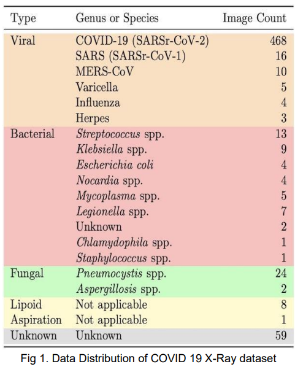
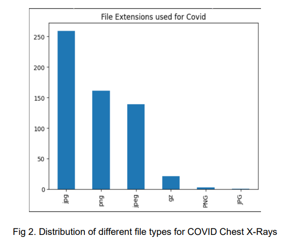

Corona Virus Detection in Chest X-Rays
Overview
Introduction
Background Information
What is COVID-19?
Use of X Rays as an alternative to testing kit
Related Works
Some works are:
Implemented Method
In our project we will have the following tasks:
Data Collection
For our project we will be collecting data from 2 data sources: 1. Covid 19 X-Ray DataSet [11] 2. Bacterial and Viral Pneumonia
Covid 19 X-Ray DataSet
This data has the following distribution illustrated in the following image:

From this data set we take images that are labeled as COVID and the X-ray image is in the anteroposterior (AP) or in the anteroposterior supine position(AP Supine).
The COVID images were stored in the following formats:

Bacterial and Viral Pneumonia

Data Preparation

20% of the dataset is reserved for testing and 20% of the training data is used for validation. We perform the following transformations on the images: 1. GrayScale Conversion - All the images have the same number of channels, i.e. all the images should either be in RGB or grayscale. For this project we are going to convert all images to grayscale. 2. Resize - All the images have the same dimensions i.e. 224x224 3. Center Crop - Crops a given image at the center 4. Normalize - Normalize a given image with mean = 0.5 and standard deviation = 0.5
After doing the aforementioned processes our images will look as illustrated in Fig 4.

Optionally we also use Fourier Transform, to see whether we can improve the results.

Building our model
CNN
In this project, rather than use a pretrained model, we built our own CNN Model. Our CNN model architecture is as follows: 1. Input Convolution layer: This layer has a width of 224 and height of 224 and is composed of a single channel and is processed through the convolution layer with a filter size of 7 and stride of 4. 16 filters are used here. Our output dimensions here are 55x55x16 2. 1st Hidden Convolution layer: The output dimensions in the previous layer serves as the input here. We have 32 filters in this layer with a filter size of 5 and stride of 2. Our output dimensions are then 26x26x32 3. 1st Max Pooling Layer: The output of the previous layer is then subject to max pooling where the kernel size is 3 and stride is 2. The output dimensions here are 12x12x32 4. First Batch Normalisation layer: Batch Normalisation is performed here to speed up the learning process. Output dimensions are the same as the input dimensions. 5. 2nd Hidden Convolution layer: The input size here is 12x12x32 which then undergoes convolution through 64 filters with kernel size of 3 and stride of 1. The output dimension here then would be 10x10x64 6. 3rd Hidden Convolution layer: The input size is 10x10x64 which then undergoes convolution through 128 filters of kernel size 3 with a stride of 1. The output dimension here would then be 8x8x128 7. 2nd Max Pool layer: The input size is 8x8x128 which undergoes max pooling against kernel of size 3 with stride 1. The output dimension produced here is 6x6x128 8. 2nd Batch Normalisation layer: Batch Normalisation is performed here to speed up the learning process. Output dimensions are the same as the input dimensions. 9. Flatten Layer: The output of the Batch Normalisation layer is then flattened so that the dimensions are 1x4608 10. 1st Hidden Fully Connected Layer: The input size here is 1x4608 and the output size here 1x100. 11. 1st Dropout layer: The dropout percentage is 50% 12. 2nd Hidden Fully Connected Layer: The input size here is 1x100 and the output size here is 1x50. 13. 2nd Dropout layer: The dropout percentage is 50% 14. Output layer: This is a fully connected layer whose input size is 1x50 and output is 1x3. The activation used throughout except in the output layer is ReLU which is given in Eq5. The output for each convolution is,

Where Ni is the number of data in a batch and Cout denotes the number of output channels, Cin
denotes the number of input channels.
The output dimensions for the convolution layer are determined by the following formulas:
 Where Hout and Wout are the output height and width and our final dimensions are
(Hout,Wout,Cout). In this case padding is 0 and dilation by default is 1 for all our convolution
layers.
The output for our MaxPool Layers is given in the following equation:
Where Hout and Wout are the output height and width and our final dimensions are
(Hout,Wout,Cout). In this case padding is 0 and dilation by default is 1 for all our convolution
layers.
The output for our MaxPool Layers is given in the following equation:
 Where h and w are our kernel sizes used in the max pooling layer.
If the input dimensions to the max pool layer is (N,C,H,W) then our output dimensions will be
(N,C,Hout,Wout) where Hout and Wout calculations are given in Eq2.
Our batch normalization layers follow the calculations given in Eq4.
Where h and w are our kernel sizes used in the max pooling layer.
If the input dimensions to the max pool layer is (N,C,H,W) then our output dimensions will be
(N,C,Hout,Wout) where Hout and Wout calculations are given in Eq2.
Our batch normalization layers follow the calculations given in Eq4.
 Where y is the output for a given x value and E[x] and Var[x] are the mean and variance and
sqrt(Var(x)) is the standard deviation. These are calculated for a given batch. Gamma and Beta
are learnable parameters. These vector sizes are the same as the channel size for the given
input.
Where y is the output for a given x value and E[x] and Var[x] are the mean and variance and
sqrt(Var(x)) is the standard deviation. These are calculated for a given batch. Gamma and Beta
are learnable parameters. These vector sizes are the same as the channel size for the given
input.

The optimiser used for optimization is the Adam Optimizer which is given in Fig 7.
 The loss function used is Cross Entropy which is given Eq6.
The loss function used is Cross Entropy which is given Eq6.

KNN
The KNN algorithm implemented in this project doesn't have a traditional architectural design like a neural network. It follows a more straightforward approach based on distance calculations and majority voting.The KNN algorithm implemented in this project follows these steps: 1. Retrieve Test Image - The code retrieves the test image at the current index from the x_test tensor. This test image represents the data point that we want to classify. 2. Calculate Distances to Training Set - The code calculates the Euclidean distance between the test image and every image in the training set. The Euclidean distance is a measure of similarity between two vectors. In this case, it represents the dissimilarity between the test image and each training image. The distances are stored in the distance tensor.
 3. Identify K Nearest Neighbors - The code identifies the k nearest neighbors of the test
image. This involves finding the k training images that have the smallest distances to the
test image. The torch.topk() function is used to select the k smallest distances and their
corresponding indices. The indices are stored in the indexes tensor.
4. Gather Class Labels of Nearest Neighbors - The code gathers the class labels of the k
nearest neighbors using the torch.gather() function. The class labels are stored in the
classes tensor.
5. Determine Majority Class - The code determines the majority class label among the k
nearest neighbors using the torch.mode() function. The majority class label is the class
label that occurs most frequently among the nearest neighbors. The majority class label
is stored in the mode variable.
6. Assign Predicted Class - The code assigns the majority class label to the test image as its
predicted class. This means that the test image is classified as the class that is most
represented among its k nearest neighbors.
3. Identify K Nearest Neighbors - The code identifies the k nearest neighbors of the test
image. This involves finding the k training images that have the smallest distances to the
test image. The torch.topk() function is used to select the k smallest distances and their
corresponding indices. The indices are stored in the indexes tensor.
4. Gather Class Labels of Nearest Neighbors - The code gathers the class labels of the k
nearest neighbors using the torch.gather() function. The class labels are stored in the
classes tensor.
5. Determine Majority Class - The code determines the majority class label among the k
nearest neighbors using the torch.mode() function. The majority class label is the class
label that occurs most frequently among the nearest neighbors. The majority class label
is stored in the mode variable.
6. Assign Predicted Class - The code assigns the majority class label to the test image as its
predicted class. This means that the test image is classified as the class that is most
represented among its k nearest neighbors.